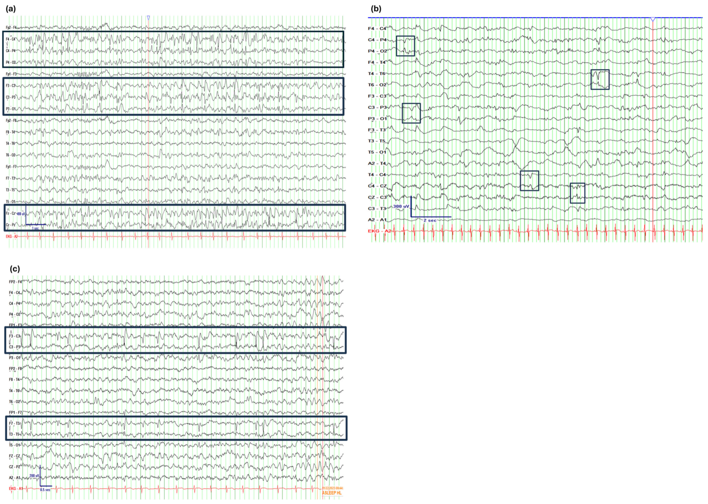

Achado / pegadinha · Pág. 19 de 20
Banco de raciocínio I — rolândica e ELT
As síndromes são os grandes marcadores de prova depois da base conceitual. Aqui vêm dois casos com armadilha de diagnóstico diferencial embutida — um noturno orofacial de criança, um de automatismos de adulto — para treinar o olho antes do banco final.
Caso 1 · menino de 7 anos, noturno
Previramente hígido; 2º episódio noturno semelhante a um de ~2 min há 7 meses. A mãe ouve barulho e encontra o filho sentado na cama, babando, com fala alterada; o menino relata dormência em língua, lábios, gengivas e bochecha (consciência preservada). EN normal à tarde; EEG interictal: ondas agudas bifásicas de alta amplitude + ondas lentas em centro-temporais, exacerbando no sono.
Revelar diagnóstico
Caso 2 · mulher de 40 anos
Perda de consciência + movimentos orais mastigatórios + movimentos repetitivos de mãos (esfregar objetos, ajeitar roupa); 1–2 min; confusão e sonolência pós-ictal.
Revelar classificação e droga
Caso rolândica
As síndromes são os grandes marcadores de prova depois da base conceitual. Caso: menino de 7 anos, previamente hígido; 2º episódio noturno semelhante a um de ~2 min há 7 meses. A mãe ouve barulho; encontra o filho sentado na cama, babando, com fala alterada; o menino relata dormência em língua, lábios, gengivas e bochecha (consciência preservada). EN normal à tarde; EEG interictal: ondas agudas bifásicas de alta amplitude + ondas lentas projetando em centro-temporais, exacerbando no sono.
Dx mais provável: epilepsia autolimitada com espículas centro-temporais (rolândica).
DDx que caem
- Terror noturno: acorda em terror, taquicardia/sudorese, volta a dormir, amnésia no dia seguinte — não cabe (aqui há consciência e dormência orofacial).
- Landau-Kleffner / “apatia epiléptica” no discurso: encefalopatia rara com deterioração de linguagem por atividade noturna — não é “acorda com boca dormente e fala errada”.
- AIT em menino de 7 anos: forçação de barra frente ao padrão clássico rolândico.
Caso ELT
Mulher de 40 anos: perda de consciência + movimentos orais mastigatórios + movimentos repetitivos de mãos (esfregar objetos, ajeitar roupa); 1–2 min; confusão e sonolência pós.
Classificação e CBZ
Classificação: focal com perda de consciência (parcial complexa na nomenclatura antiga) — não “parcial simples” (há perda de consciência), não TCG (sem tônico/clônico; há automatismos), não ausência (duração 1–2 min e semiologia diferente). A síndrome mais comum no adulto com esse padrão: epilepsia do lobo temporal. O fármaco mais indicado no discurso: carbamazepina.

Resumo operacional
As síndromes são os grandes marcadores de prova depois da base conceitual; rolândica e ELT têm semiologia e EEG próprios.
Por que importa
Confundir rolândica com terror noturno ou ELT com TCG leva ao rótulo — e à droga — errados.
Quiz
Conexão
Ainda faltam ausência, TCG adulto e o DDx de porta — síncope, psicogênica e as fronteiras do eixo.